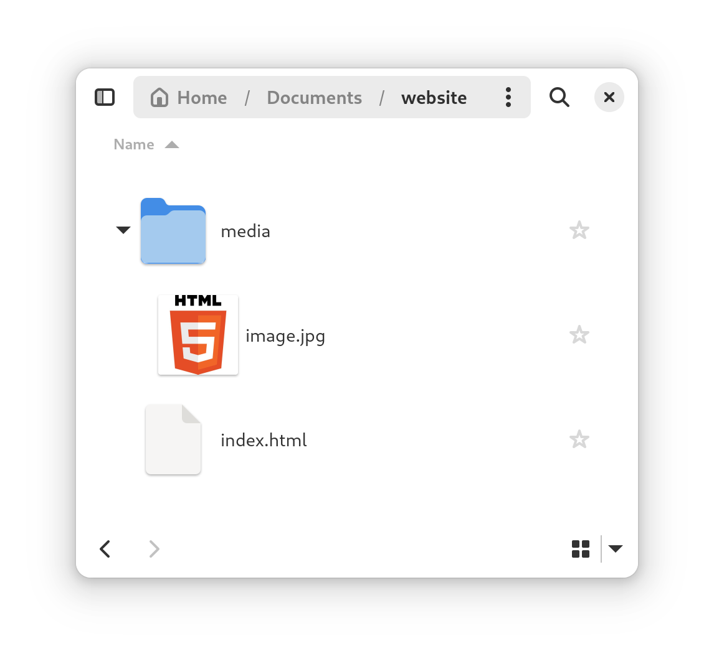

Externe Links
Externe links verwijzen naar media (afbeeldingen, video’s, …) die elders op internet zijn opgeslagen.
<img src="https://example.com/foto.jpg">
Voordelen:
- Bespaart opslagruimte in het project.
Nadelen:
- Mogelijk tragere laadtijden.
- Risico op onbruikbare links bij verwijdering van de bron.
Lokale Bestanden
Lokale media zijn bestanden die direct in de projectmap zijn opgeslagen.

<img src="images/foto.jpg">
Voordelen:
- Snellere laadtijden
- Onafhankelijkheid van externe servers.
- Offline beschikbaarheid.
Nadelen:
- Grotere projectomvang.
- Meer opslagruimte vereist op hosting.
info
Het is aangeraden om met lokale bestanden te werken.
Organisatie van lokale bestanden
Bij het uploaden of delen van een website is het belangrijk om lokale mediabestanden correct mee te sturen, anders zullen deze niet meer werken op je website.
Het is belangrijk de locatie van het bestand correct te noteren.
De afbeelding in dezelfde map als het .html bestand

<img src="image.jpg">
De afbeelding in een submap
<img src="media/image.jpg">
Het belang van relatieve paden
Bij het verwijzen naar mediabestanden in je HTML-code is het cruciaal om relatieve paden te gebruiken in plaats van absolute paden.
Relatief pad:
<img src="media/foto.jpg">
Absoluut pad:
<img src="C:/Users/Maes/Website/media/foto.jpg">
Voordelen van het gebruik van relatieve paden:
- Portabiliteit: Je project kan eenvoudig worden verplaatst naar een andere locatie of server zonder dat paden hoeven te worden aangepast.
- Compatibiliteit: Relatieve paden werken op verschillende besturingssystemen (Windows, macOS, Linux) zonder aanpassingen.
- Hosting: Bij het uploaden naar een webserver blijven relatieve paden correct functioneren, terwijl absolute paden vaak niet meer werken.
info
Het is aangeraden om altijd met relatieve paden te werken.